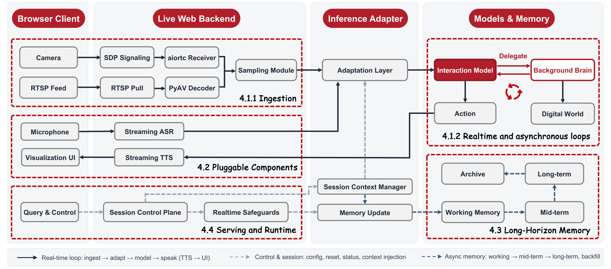

The most important moments rarely wait for you to ask. A pot boils over while your hands are full. A toddler wanders toward the stove. The best moment of the game is gone before you can react. By the time you'd think to ask an AI, the moment has already passed, because the real world doesn't pause.
Today's AI can't help with moments like these, and it isn't a matter of speed. These models are turn-based by design: they sit quietly until you address them, then answer the question you asked. Even the video-call features in today's apps are question-and-answer underneath, reacting only when polled or asked. They were built for conversation, not for being present in a world that keeps moving.
We think the next step is a model that's present like a person: one that watches what's happening now, decides on its own when a moment is worth a word, speaks up when it matters and stays quiet when it doesn't, and hands off to a stronger model when a problem is hard. Thinking Machines Lab recently named this an interaction model. We believe it's the right direction, and we wanted to make it something anyone can build on.
So today we're releasing JoyAI-VL-Interaction: an 8B-scale, vision-first interaction model, released together with its training recipe, its data, and a complete, deployable system, all fully OPEN. Point a webcam or a livestream at it and it's immediately present in the scene, watching and responding in real time. Because the model is compact and the system runs on standard infrastructure, anyone can stand up their own always-present assistant from a single repository.
In head-to-head tests against the in-app video-call assistants of Doubao and Gemini, across 58 recorded visual-interaction cases from live commentary and monitoring to real-time memory, human raters preferred JoyAI-VL-Interaction by a wide margin on both what it says and when it says it. And along the way, the same recipe gave rise to abilities we never trained for, like guiding a shopper through changing app screens or improvising a lecture from a slide deck.
Our goal is simple: to take what interaction models make possible and put it in everyone's hands, helping move multimodal AI from turn-based dialogue toward genuine, real-time presence, openly and together. Here's what that looks like.
01Real-time presence
It stays present in a live stream for hours, watching every second and responding in under a second, instead of waking up only when you ask.
02Vision-triggered proactivity
It decides for itself, from what it sees, when a moment is worth a word, speaking up the instant something matters and staying quiet when nothing does.
03Agent delegation
When a problem outgrows real-time inference, it hands the task to a background agent or API, even one that acts in the digital world, and folds the answer back in while it keeps watching.
04Fully OPEN stack
We release everything, the 8B model, its training recipe, the data, and a complete deployable system, so anyone can run, reproduce, and build on it from a single repository.
Capabilities
Once interactivity is trained into the model itself, rather than bolted on by an
external harness, a whole class of capabilities comes naturally. These are exactly
the things a turn-based assistant can't do well, however fast it answers: being
present, acting at the right moment, sensing time, and remembering across a long
stream. Here are nine of them, each a natural advantage of building interaction into
the model. And for every demo below, we include real screen recordings of Doubao's
and Gemini's video-call assistants alongside ours, so the difference in interaction
style between an interaction model and a turn-based one is plain to see.
A translation assistant has to keep listening and watching as the scene changes,
rather than producing one answer for the frame where the task is issued.
Task: Help me translate subtitles in real time into Chinese/English.
Demo 01
Pharmacy Visit Animation
Real-time translation
JoyAI-VL-Interaction
Translates in real time as the video plays, catching every new subtitle the moment it changes with none left out, rather than answering only once.
Doubao
Translates only the beginning and the end, and even then slightly late, never keeping up with any of the subtitles in between in real time.
Gemini
Does not translate the subtitles, replies in English instead, and responds only once, at the moment the user asks.
Demo 02
Street Interview Translation
Real-time translation
JoyAI-VL-Interaction
Completes the task as continuous real-time translation, rendering each new subtitle the instant it appears and missing none.
Doubao
Focuses only on the subtitle in the frame at the moment the question is asked, and does not sustain translation through the later dialogue.
Gemini
Focuses only on the subtitle in the frame at the moment the question is asked, and does not sustain translation through the later dialogue.
Capability 02
Monitoring and Alerting
Monitoring and alerting
Alerting is the clearest test of whether a model is genuinely present. The right
response is neither early nor late: it should arrive when the watched event occurs.
Task: Warn immediately when the yellow-card event appears.
Demo 01
Yellow-card Alert
Monitoring and alerting
JoyAI-VL-Interaction
Responds quickly when the visual warning appears.
Doubao
Responds roughly 20 seconds later in this case, which is too slow for a monitoring task.
Gemini
Stays focused on earlier context rather than monitoring the later visual event.
Demo 02
Fall Detection Alert
Monitoring and alerting
JoyAI-VL-Interaction
Sends the warning immediately when the fall occurs.
Doubao
Responds several seconds late, weakening its usefulness for safety monitoring.
Gemini
Treats the task like backward-looking video QA rather than a live alerting task.
Capability 03
App Guidance
App guidance
App guidance requires a model to follow a user's intent across changing screens,
keeping the goal alive instead of describing one snapshot.
Task: Help the user browse an app and choose a suitable product under a budget.
Demo 01
Shopping App Guidance
App guidance
JoyAI-VL-Interaction
Responds promptly and keeps guiding as the app screen changes.
Doubao
Does not proactively continue the guidance in the recorded comparison.
Gemini
Also lacks proactive follow-up in the recorded comparison.
Demo 02
Zhuanzhuan App Commentary
App guidance
JoyAI-VL-Interaction
Keeps up with the changing phone screen and comments at the requested rhythm.
Doubao
Responds only once in this case rather than continuing to follow the app.
Gemini
Shows strong initial recognition but still behaves as a one-shot responder.
Capability 04
Live Commentary
Live commentary
Commentary is not just captioning. It requires the model to decide when a scene
deserves narration and when silence is better.
Task: Narrate the visible scene in a lively, scene-grounded style.
Demo 01
Pet Livestream Commentary
Live commentary
JoyAI-VL-Interaction
Follows the scene and gives grounded commentary as the visible pets change.
Doubao
Describes only a few moments among many shots and often misses the actual visual content.
Gemini
Gives only one response in this case instead of continuing with the stream.
Demo 02
Travel Scene Commentary
Live commentary
JoyAI-VL-Interaction
Maintains the requested commentary rhythm and keeps the narration grounded in the changing travel scene.
Doubao
Comments only near the beginning and does not follow the requested repeated timing.
Gemini
Produces a mismatched response style and does not sustain live commentary through the scene.
Capability 05
Real-time Counting
Real-time counting
Counting over live video asks the model to maintain state across repeated events,
not just recognize a static object.
Task: Count each dart throw as it happens in the video.
Demo 01
Dart Throw Counting
Real-time counting
JoyAI-VL-Interaction
Catches the right timing for the repeated dart events.
Doubao
Replies only twice, with higher delay and less reasonable responses.
Gemini
Says "let me check" once and then stops responding in the recorded case.
Demo 02
Burpee Counting
Real-time counting
JoyAI-VL-Interaction
Tracks repeated exercise actions and updates the count at the right moments.
Doubao
Responds only once and misses the continuous counting behavior.
Gemini
Does not perform reliable real-time counting in the recorded comparison.
Capability 06
Time Awareness
Time awareness
Some tasks are defined by time itself: answer every few seconds, wait until a
timer is over, or report how long an activity has lasted.
Task: Continue the interaction with an explicit sense of elapsed time during the cooking scene.
Demo 01
Timed Cooking Scene
Time awareness
JoyAI-VL-Interaction
Perceives the 20-second timing target with about a 2-second error in this case, still ranking first overall.
Doubao
Does not remind the user when the game ends in this recording.
Gemini
Reminds at around 40 seconds, showing a larger timing error for this task.
Demo 02
Stove Cleaning Timer
Time awareness
JoyAI-VL-Interaction
Counts on the requested interval and stops when instructed, keeping its own sense of elapsed time.
Doubao
Does not keep the requested repeated timing reliably.
Gemini
Stops after a short response and does not sustain the timed interaction.
Capability 07
Long visual memory (5+ min)
Long visual memory (5+ min)
These cases focus on recalling visual details over a live session measured in
minutes, not on claiming broad persistent-memory superiority.
Task: Remember an earlier visual detail and answer when the user asks about it later.
Demo 01
Meatball Count Recall
Long visual memory (5+ min)
JoyAI-VL-Interaction
Answers correctly from earlier visual context.
Doubao
Gives an incorrect meatball count in the recorded comparison.
Gemini
Gemini timed out in this case, so no matching recording is shown.
Capability 08
Visual-driven Interaction
Visual-driven interaction
The model needs to react to what the human is doing in the visible scene and
keep the interaction grounded in those changing actions.
Task: Chat naturally from the live visual context and react when the scene changes.
Demo 01
Scene-aware Casual Interaction
Visual-driven interaction
JoyAI-VL-Interaction
Caption to refine: Keeps the conversation grounded in what is currently visible and reacts as the live scene changes.
Capability 09
Agent Delegation in the Wild
Agent delegation
Some tasks should not be solved inline by the real-time model. JoyAI-VL-Interaction
learns to delegate a hard subtask to a background model or agent while continuing
to watch the live stream.
Task: Delegate harder visual tasks to the background model in real time.
Demo 01
Phone App Delegation
Agent delegation
JoyAI-VL-Interaction
Call the background model in real time to replicate a mobile app's UI, with interactions that let you complete other tasks (such as counting) while the background model is processing.
Demo 02
Mean Value Theorem Delegation
Agent delegation
JoyAI-VL-Interaction
Call the background model in real time to work through the proof of the Mean Value Theorem, while the interaction model handles multi-turn Q&A as the background model processes.
More Things It Can Do
Beyond the capability demos above, there's a lot more you can do with
JoyAI-VL-Interaction, and the examples below show a few. Intuitively, it can also
call a live game as it's played, guide you through a recipe step by step while you
cook, or generate danmaku-style live comments over a stream on its own. These are
just a start, and we'd love for the community to explore many more ways to use it.
Cooking GuidanceHands-free kitchen assistance
Watches the cooking process and gives guidance while the user's hands are busy.
CompanionshipPresence in a shared visual moment
Chats from the first-person visual context, making the interaction feel less like a detached Q&A session.
Outfit GuidanceStyle advice from what the camera sees
Grounds suggestions in visible clothing, color, and occasion cues.
Detail RecallRemembering fleeting visual details
Answers later questions about objects that passed through the stream earlier.
Minute-scale Visual RecallRecall across a browsing session
Maintains useful shopping-scene details as the stream continues.
Visual CreationCreative writing grounded in the scene
Writes from what it sees, not from a generic prompt template.
Racing CommentaryLive play-by-play from a moving scene
Narrates a racing event as the scene unfolds, grounding commentary in the changing visual action.
Proactive ResponseSpeaking up when the moment calls for it
Responds from the live visual context without waiting for a new turn-based prompt.
Finding ThingsAlerting when a target appears
Waits through the live stream and speaks up when the requested item comes into view.
Our Approach

At the core of JoyAI-VL-Interaction is one decision the model makes on its own, every
second: speak, stay silent, or delegate. We build it on our visual-language instruct
model, JoyAI-VL-8B, and keep speech as pluggable input and output rather than fusing
it into the model, so the model's only job is to watch and judge the right moment to
act. To stay real-time over long streams, a predictive video codec (AdaCodec) spends
only a handful of tokens on each predictable frame and saves full detail for the
moments the scene actually changes, so the token budget grows slowly instead of with
every frame. The behavior is learned rather than scripted: we train the model on more
than four million time-aligned clips labeled second by second for when to speak, stay
silent, or delegate, and refine it with reinforcement learning. We release the data
and the full recipe so the result can be reproduced and extended.
Around this model we build a complete, deployable system so it works out of the box.
The model is the only part that decides when to act; everything else is a pluggable
component arranged around it: streaming ASR and TTS for speech, a long-horizon memory
that keeps useful detail across hours, a visualization UI, and a bridge that lets the
model hand hard subtasks to any background model, API, or agent and fold the answer
back while it keeps watching. The whole stack runs on standard vLLM infrastructure to
stay real-time over long sessions, and any component can be swapped for a deployment's
own without rebuilding the rest.
We are open-sourcing all of it, the 8B model, its training recipe, the data, and the
deployable system, so anyone can stand up a real-time, always-present assistant and
carry the interaction-model direction forward in the open. We expect the full release
to be complete by June 20, 2026, at
https://github.com/jd-opensource/JoyAI-VL-Interaction.
ModelJoyAI-VL-Interaction
The first open vision-language interaction model.
Data4M time-aligned interaction samples
Still far from saturated, with clear gains from scaling further.
SystemVL-Interaction System
A deployable system that works out of the box.
Evaluation
We evaluate the model in 58 real, event-driven visual interaction settings. Each item
is recorded as a live video interaction with JoyAI-VL-Interaction and the
corresponding in-app video-call assistant, then judged pairwise by human raters for
both response quality and timing. This keeps the evaluation close to the product
setting we care about: whether the assistant says the right thing at the right moment
while the scene is actually moving.
Each aspect corresponds to a scenario category in the evaluation ledger. The memory
category here is a minute-scale visual recall setting, with cases mostly spanning
several minutes to a little over ten minutes. The tables report the percentage of
pairwise comparisons where human raters preferred JoyAI-VL-Interaction, found a tie,
or preferred the baseline.
In the final aggregate, JoyAI-VL-Interaction wins
77.6% of pairwise comparisons against Doubao
and 87.9% against Gemini, with ties included
separately in the tables below. Its strongest margins fall on the most time-critical
settings: it wins every comparison in monitoring and alerting against both systems
and never loses one in real-time translation or counting, exactly the event-driven,
act-at-the-right-moment tasks that turn-based products structurally miss.
JoyAI-VL-Interaction vs Doubao
Aspect
JoyAI-VL-Interaction
Tie
Doubao
Monitoring and alerting
100.0%
0.0%
0.0%
Real-time counting
70.0%
30.0%
0.0%
Real-time translation
80.0%
20.0%
0.0%
Time awareness
80.0%
10.0%
10.0%
Live commentary and guidance
55.6%
22.2%
22.2%
Long visual memory
77.8%
22.2%
0.0%
Overall
77.6%
17.2%
5.2%
JoyAI-VL-Interaction vs Gemini
Aspect
JoyAI-VL-Interaction
Tie
Gemini
Monitoring and alerting
100.0%
0.0%
0.0%
Real-time counting
100.0%
0.0%
0.0%
Real-time translation
100.0%
0.0%
0.0%
Time awareness
50.0%
40.0%
10.0%
Live commentary and guidance
100.0%
0.0%
0.0%
Long visual memory
77.8%
22.2%
0.0%
Overall
87.9%
10.3%
1.7%
Conclusion
Limitations
We want to be upfront about scale. The video-call assistants we compare against,
Doubao and Gemini, are backed by far larger models and polished through years of
product iteration against real users; they are comprehensive, broadly knowledgeable,
and hard to beat on open-ended chat, personal style, and the long tail of everyday
requests. JoyAI-VL-Interaction is a compact 8B model, and we don't claim to match them
everywhere. What we have done is pry open a door: in the advantage zone of a
vision-language interaction model, real-time presence, vision-triggered proactivity,
and a sense of time across a stream, a far smaller open model already comes out ahead.
That a compact, open model can do this against large, heavily optimized products is
exactly why we're excited to put this work in front of the community.
What's next, and an invitation
And we think this is only the beginning. The interaction data we trained on is still
small, yet even this much was enough for capabilities we never explicitly taught, like
guiding a shopper through changing app screens, to emerge on their own; we're
convinced the headroom is large, and that scaling this kind of time-aligned data,
together with the recipe and the system, will take the model much further. The moment
we are reaching for is an everyday one: you come home worn out after a long day, and
before you have said a word, a quiet voice notices and offers, "I can see you're tired;
today must have been hard on you." Presence like that, given unasked, is what an
interaction model makes possible and a turn-based one, waiting to be addressed, never
can. We have released the whole stack openly, the 8B model, the time-aligned data, the
training recipe, and the deployable system, to lower the barrier for everyone working
in this direction. We'd love for you to explore, with us, what a model that is truly
present in the world can become.